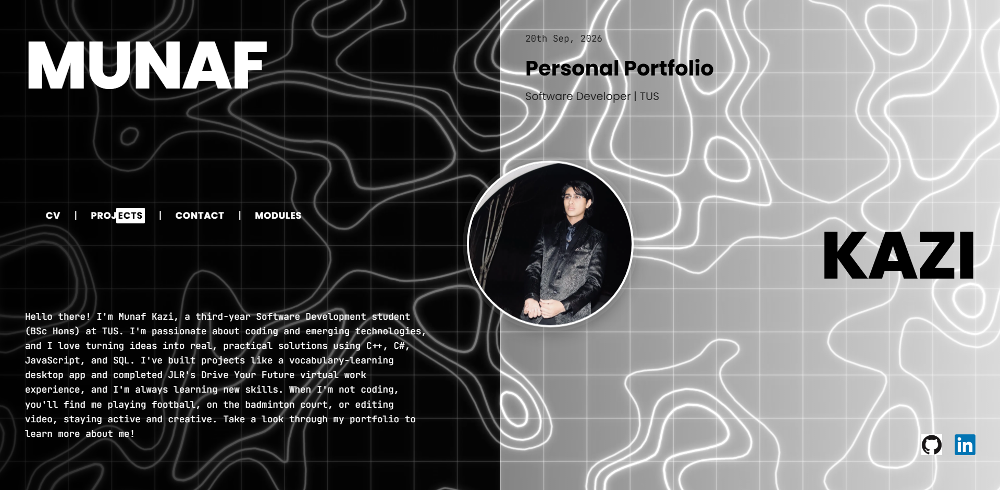
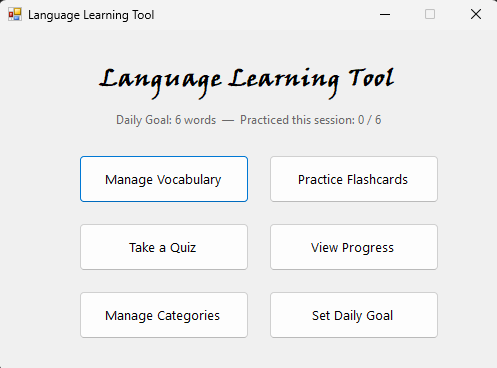
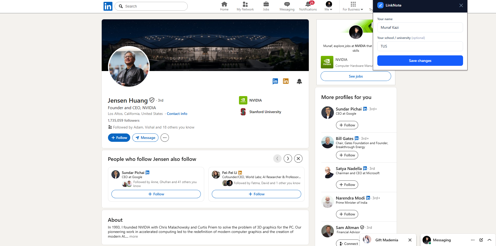
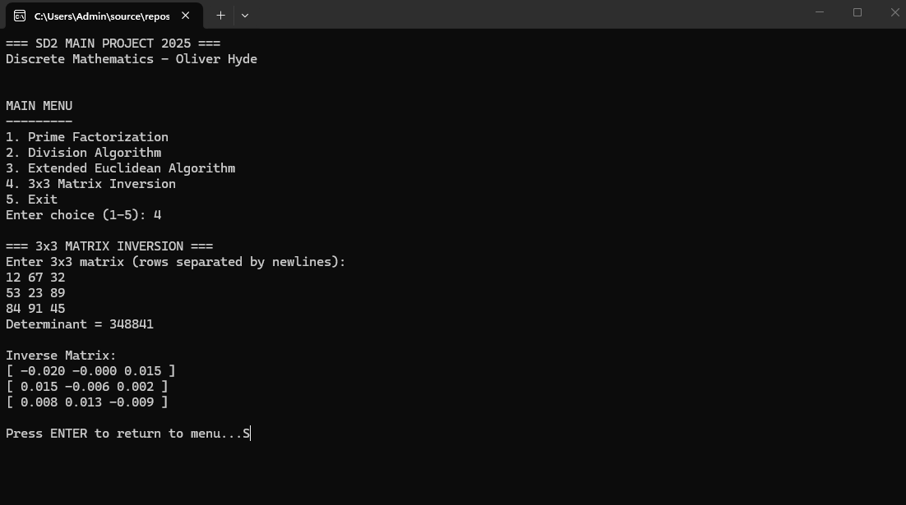

MY PROJECTS
What I've built & achieved
DEVELOPMENT PROJECTS

Personal Portfolio Website
Designed and built this fully responsive multi-page portfolio site from scratch. I made it as a place that actually feels like me, somewhere you can get to know who I am and what I do, from the projects I've worked on to the way I like to solve problems. It includes a contact form if you'd like to get in touch :)
Tech stack: HTML, CSS, JavaScript
View Project ↗
Language Learning Tool
Built a vocabulary-learning desktop app in C#/WinForms with a team of two, helping learners memorise foreign-language words through flashcards, quizzes, and progress tracking. Architected it with clean object-oriented design, keeping vocabulary entries, quiz logic, and progress data in distinct, easy-to-extend classes. Added an adaptive review feature that tracks wrong answers and feeds them back into practice, so learners drill exactly what they keep getting wrong.
Tech stack: C#, WinForms
View Project ↗
LinkNote - Browser Extension
Designed a Chrome extension that reads the LinkedIn profile you're viewing and generates two personalised connection-request drafts in your choice of tone (Professional, Casual, or Direct), so you're never stuck staring at a blank "Add a note" box. Pairs a template layer with an AI API for consistent, non-generic messages, while keeping the user firmly in control — no auto-sending, just copy, paste, and edit as needed. Built on Manifest V3 with a lightweight proxy server so the API key never ships in the extension bundle, and zero profile data is stored server-side.
Tech stack: JavaScript, Chrome Extension (Manifest V3), Node.js, Claude API
View Project ↗
Discrete Mathematics Console Application
Built a menu-driven C# console application implementing core discrete mathematics algorithms, including prime factorisation, the Extended Euclidean Algorithm, RSA key generation, and 3×3 matrix inversion. Authored a comprehensive README documenting functionality, usage instructions, and algorithm explanations, so other developers could follow along easily. Finished with a final grade of 99/100.
Tech stack: C#
View Project ↗